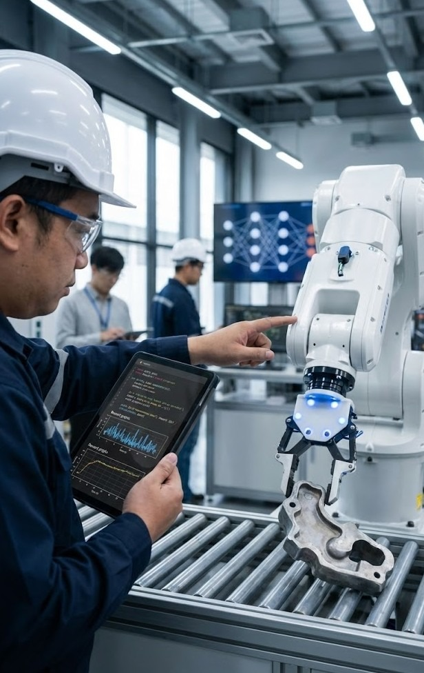

Transitioning from the world of hardened PLCs and 24V DC logic to the abstract, probabilistic world of Data Science wasn't a straight line. It was a journey of unlearning and relearning.
The Hardware Roots
I started my career terminating wires and debugging ladder logic. In the OT (Operational Technology) world, things are binary. A relay is Open or Closed. A motor is Running or Stopped. There is very little ambiguity, and reliability is paramount.
The Data Epiphany
Working on SCADA systems for massive power grids (like SP Group), I realized we were sitting on oceans of data. We were logging millions of tags, but mostly just for archives. I asked: "Can we predict a failure before it happens?"
That question led me down the rabbit hole of Machine Learning.
The Learning Curve
I had to swap my multimeter for Jupyter Notebooks. I dove into:
- Statistics: Understanding that "95% accuracy" might still be terrible for a safety system.
- Algorithms: Moving from sequential logic to vectorized operations.
- Tooling: Embracing Git, Docker, and CI/CD pipelines which were alien to traditional PLC workflow.
Where I Am Now
Today, as an M.S. in Computer Science (Data Science & AI) graduate and a Senior Automation & Robotics Engineer, I sit exactly at that intersection. I speak the language of the electrician on the shop floor and the data scientist in the cloud. And it is the most exciting place to be.
About the Author
Nay Linn Aung is a Senior Automation & Robotics Engineer (M.S. Computer Science — Data Science & AI) specializing in the convergence of OT and IT.